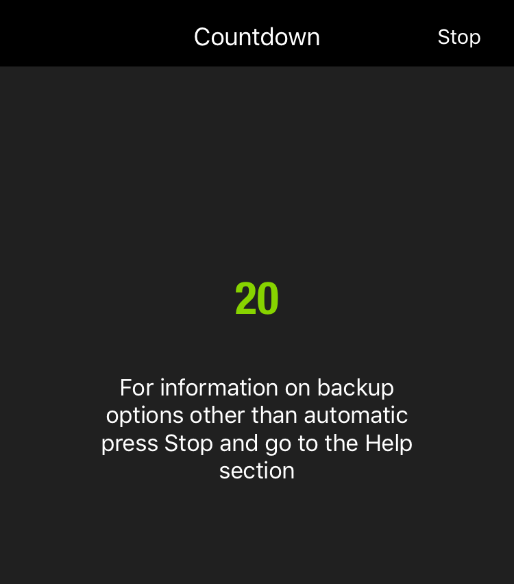

Automatic Backup
After the first backup, whenever you connect MEEM to charge your device, backup will start automatically after a 20 second countdown.

If the contents on your device have changed more that 5%, MEEM will automatically alert you. This is to ensure that if you have erased a lot of information from your device, such as through a factory reset (which deletes all the data on your device), you want to perform the same deletion on your MEEM.
If you want to stop the backup and restore the data on your MEEM to your phone, press stop at the top of the screen and follow the directions below.